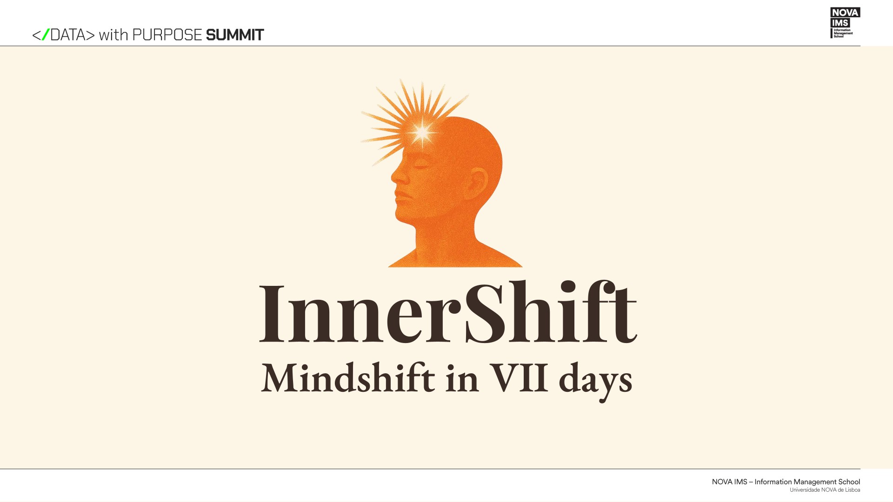
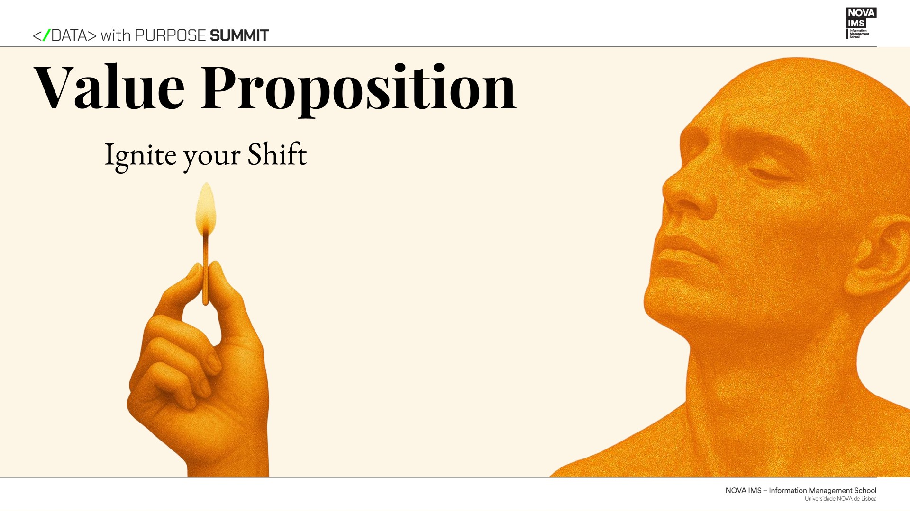

TEAM LEADERSHIP
Coordinated the team and helped organize the development of the project.
RECOVERED PROJECT / 001
Mindshift in VII days.
A 7-day ritual, masked as a game.

LAYER OFFSET +03PX SOURCE SIGNAL FOUND> ACCESSING ORIGINAL RECORD...
The Dean's Open Innovation Challenge asked participants to explore how data and technology could contribute to wellbeing, work-life balance and mental health.
ORIGINAL ARTIFACT
Mindshift in VII days
InnerShift was conceived as a seven-day experience designed to encourage people to actively participate in their own lives rather than remain passive bystanders.
Seven small interventions designed to break the loop, redirect attention and make participation tangible.
DAY I
Disconnect from the habitual digital environment and begin paying attention to the world around you.
Coordinated the team and helped organize the development of the project.
Developed the final PowerPoint presentation from the initial Canva draft.
Prepared team members for the public presentation, including guidance on delivery and public speaking.
Represented the team during the final presentation and helped communicate the project to the audience.
A personalized journey based on the participant's application.
Challenges could continue beyond Day VII through community participation.

PROJECT SIGNAL / DIGITAL LAYERA physical version with a base game and potential expansions.
The archive retains the project language, while the original artifact retains its visual grammar.
The team felt the project received particularly strong engagement from the audience during the presentation.
UNVERIFIED / PERSONAL OBSERVATIONSELECTED MATERIAL
Selected material recovered from the original project presentation. Each artifact opens the source layer without leaving the archive.